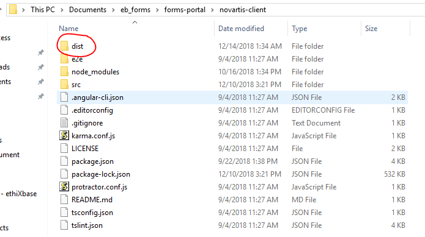
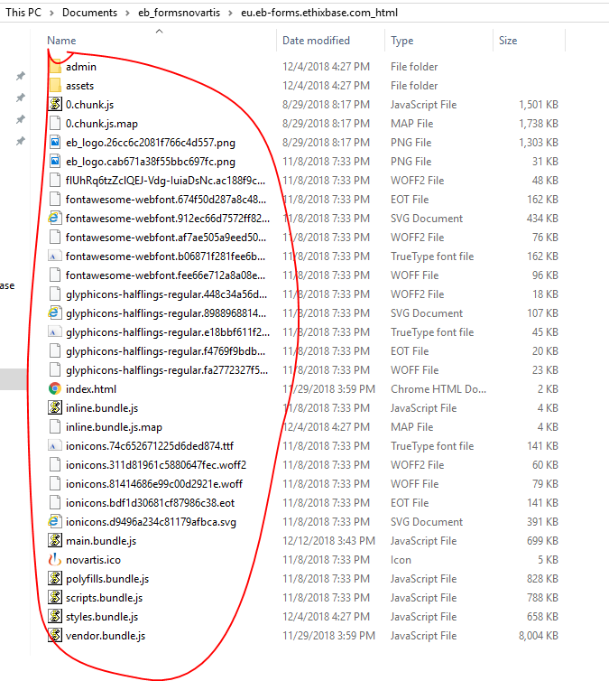
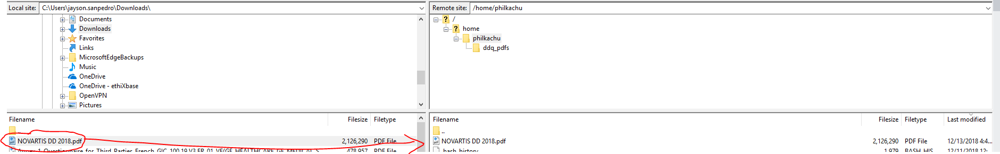
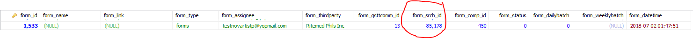
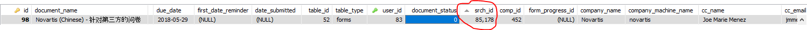

Get started on Forms Portal
Step 1
Open your prefer terminal (I used docker) and clone this repository https://git.ethixbase.com/bits/forms-portal.git for EB Forms Portal.
Step 2
After you cloned it. go to the client or novartis-client (if you are working with Novartis) directory
cd clientThen run the command below
npm install ngx-spinner@6.0.0Step 3
After finish installing all the npm packages. we now install the composer to laravel server directory, go to the server directory from the root folder of forms-portal.
cd ../serverBefore we install the composer, you will have to comment out some code to prevent the post-autoload-dump that will return some error because of an active cron event. Edit this file server->app->Console->Kernel.php and comment out all codes inside the schedule function.
Then run the command below
composer installIf you encountered some error like Ambiguous class resolution please check the last person who commit on that file.
Step 4
Now we are all set and ready to run our forms portal application.
go to the root directory of your forms-portal then run the command below where the file docker-compose.yml is exist.
docker-compose up -d --buildStep 5
And for the final step. You may run the forms-portal app on your on way whether you run the laravel artisan seperately or just run it on nginx.
go to the client or novartis-client directory then run the command below to run the nginx app.
ng serve --openor if you want to run the laravel artisan seperately. go to the server directory then run the command below where the file artisan is exist.
php artisan serveCurrent EB Forms deployment
Our deployment on forms portal is still incomplete as of now, because there is no automation of building and compiling of your committed angular code changes that will straightaway reflect on the forms portal environment except for laravel which is the server directory.
So for now you will be doing the deployment manually.
Step 1
Go to the client or novartis-client directory and start with the production build:
ng build --env=prod --no-sourcemapsStep 2
Copy everything inside the (dist/ by default) within the output directory.
Step 3
And paste or overwrite everything to a directory on the server E.g. Repository:novartis.eb-forms -> Branch:staging -> Directory:eu.eb-forms.ethixbase.com_html
Step 4
Then we will try to run some laravel artisan console commands so our code changes will reflect clearly on forms portal environment but we will use some ssh client tool for that to happen. (I used Putty) Download and open the ssh client tool you have and connect to the server with your IDM credentials. Do not attempt to access servers based on PUBLIC HOSTNAMES … some servers are HIDDEN/MASQUERADED behind Reverse proxies (Why? Because Peter Malaty's bypassing restrictions in other countries as is the case with Novartis). Use only IPs. E.g. below
us-forms.dev.ethixbase.com -> 54.69.196.176Step 5
After you enter your credentials, type the command below and enter your password again.
sudo -iStep 6
Then go to the backend server directory of forms-portal.
cd /var/www/html/eu.eb-forms.ethixbase.com_htmlStep 7
When you are now inside the said path, run all the commands below.
php artisan config:cachephp artisan route:cachephp artisan view:clearphp artisan view:cacheAll done! the codes has successfully deployed to the forms portal.
Manual DDQ Force Complete
Step 1
Start using some sftp tools for uploading the offline DDQ to the platform (I used Filezilla btw). Download and open the sftp tool you have and connect to the server with your IDM credentials (You must be connected to VPN). you make sure to transfer the file on your home directory E.g. (/home/philkachu) because it is restricted to transfer files outside of your home directory and also make sure you rename the file with some date and time so there will be no overwriting of files.
Step 2
Then we will try now to move those offline ddq file to /forms_portal_dirs/eb_forms_pdf but we will use some ssh client tool for that to happen. (I used Putty) Download and open the ssh client tool you have and connect to the server with your IDM credentials. Then type the command below and enter your password again.
sudo -iAfter that type the command below in order.
cd /home/philkachumv * /forms_portal_dirs/eb_forms_pdfAll done! the file has successfully been uploaded to the platform, now we update the third party DDQ status.
Step 3
Connect to the platform database server and find the third party's ddq status on ethixb01_db->forms_qsttcomms look for the srch_id
Step 4
Execute the sql script below so that will update the form_status as Completed, form_dailybatch and form_weeklybatch for daily and weekly cron report, form_link for the destination of the DDQ file path and form_name for the file name of DDQ report: we set it Due Diligence Questionnaire as default name.
UPDATE forms_qsttcomms SET form_name='Due Diligence Questionnaire', form_link='NOVARTIS DD 2018.pdf',form_status=1,forms_dailybatch=1,form_weeklybatch=1 WHERE form_type='forms' AND form_srch_id=85178Step 5
Execute the sql script below so that may add an audit log for ddq
INSERT INTO audit_trail_logs (vendor_id,notes,company_id,type) values ('?VENDOR_ID?',"Due Diligence Questionnaire submitted",'?COMPANY_ID?',1);Step 6
And now Connect to the EB forms portal database server and find the third party's form status on eb_forms->user_documents look for the srch_id, we also need to update this so it will sync in to our DDQ summary reports
Step 7
Execute the sql script below so that will update the document_status as Completed and the date_submitted
UPDATE user_documents SET date_submitted=NOW(), document_status=1 WHERE srch_id=85178